GETTING STARTED¶
Prerequisites¶
- install or update the AllenSDK,
our Python based toolkit for accessing and working with Allen Institute datasets.
Pandas familiarity
Data is provided in in NWB format and can be downloaded using the AllenSDK, or accessed directly via an S3 bucket (instructions provided in notebook #1 below). Regardless of which method of file download you choose, we recommend that you load and interact with the data using the tools provided in the AllenSDK, which have been designed to simplify data access and subsequent analysis. No knowledge of the NWB file format is required.
Specific information about how Visual Behavior Optical Physiology data is stored in NWB files and how AllenSDK accesses NWB files can be found here.
TUTORIALS¶
To get started, check out these jupyter notebooks to learn how to:
Download data using the AllenSDK or directly from our Amazon S3 bucket (download .ipynb) (Open in Colab)
Identify experiments of interest using the dataset manifest (download .ipynb) (Open in Colab)
Load and visualize data from a 2-photon imaging experiment (download .ipynb) (Open in Colab)
Examine the full training history of one mouse (download .ipynb) (Open in Colab)
Compare behavior and neural activity across different trial types in the task (download .ipynb) (Open in Colab)
DOCUMENTATION¶
To learn more about the experimental design and available data, read through the Visual Behavior and Visual Behavior Ophys chapters in the SWDB Databook.
For a description of available AllenSDK methods and attributes for data access, see this further documentation.
For detailed information about the experimental design, data acquisition, and informatics methods, please refer to our technical whitepaper.
If you have questions about the dataset that aren’t addressed by the whitepaper or any of our tutorials, please reach out by posting at https://community.brain-map.org/
VISUAL BEHAVIOR OPTICAL PHYSIOLOGY DATASETS¶
The Visual Behavior 2P project used in vivo 2-photon calcium imaging (also called optical physiology, or “ophys”) to measure the activity of genetically identified neurons in the visual cortex of mice performing a go/no-go visual change detection task. This dataset can be used to evaluate the influence of experience, expectation, and task engagement on neural coding and dynamics in excitatory and inhibitory cell populations. A description of the experimental design and available data is provided below.
{kind=link}
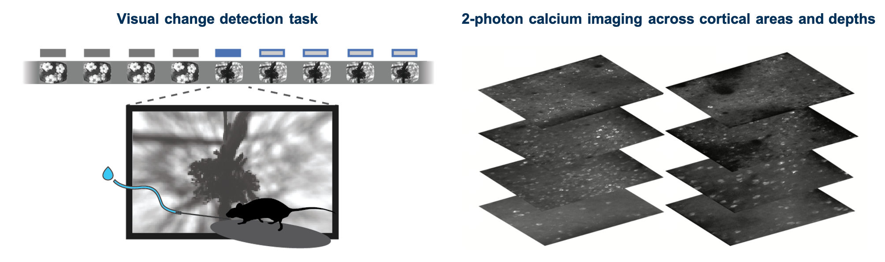
We used single- and multi-plane imaging approaches to record the activity of populations of neurons across multiple cortical depths and visual areas during change detection behavior. Each population of neurons was imaged repeatedly over multiple days under different sensory and behavioral contexts, including familiar and novel stimuli, as well as active behavior and passive viewing conditions.
{kind=link}
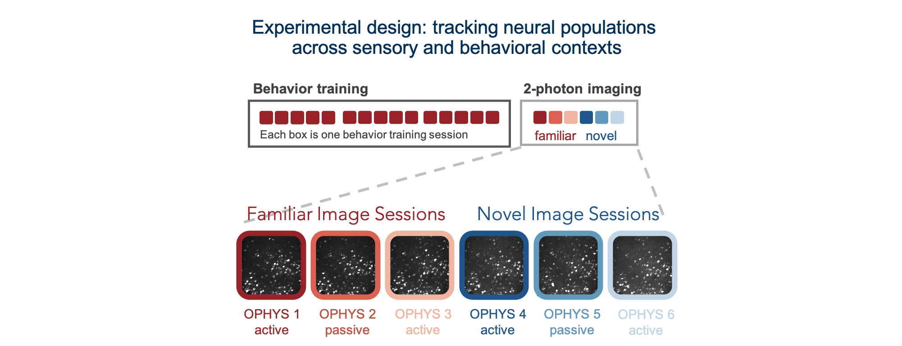
Different imaging configurations and stimulus sets were used in different groups of mice, resulting in four unique datasets (indicated by their project_code in SDK metadata tables). Two single-plane 2-photon datasets were acquired in the primary visual cortex (VISp). In the VisualBehavior dataset, mice were trained with image set A and tested with image set B which was novel to the mice. In the VisualBehaviorTask1B dataset, mice were trained with image set B and tested with image set A as the novel image set. One multi-plane dataset (VisualBehahviorMultiscope) was acquired at 4 cortical depths in 2 visual areas (VISp & VISl) using image set A for training and image set B for novelty. Another multi-plane dataset (VisualBehaviorMultiscope4areasx2d) was acquired at 2 cortical depths in 4 visual areas (VISp, VISl, VISal, VISam). In this dataset, two of the images that became highly familiar during training with image set G were interleaved among novel images in image set H.
{kind=link}
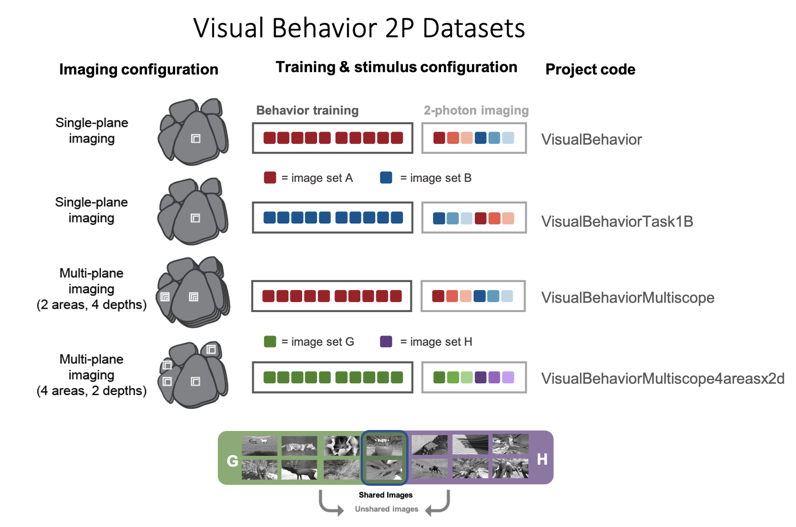
For each dataset, we imaged the activity of GCaMP6 expressing cells in populations of excitatory (Slc17a7-IRES2-Cre;Camk2a-tTA;Ai93(TITL-GCaMP6f) or Ai94(TITL-GCaMP6s)), Vip inhibitory (Vip-IRES-Cre;Ai148(TIT2L-GCaMP6f-ICL-tTA2)), and Sst inhibitory (Sst-IRES-Cre;Ai148(TIT2L-GCaMP6f-ICL-tTA2)) neurons. Imaging took place between 75-400um below the cortical surface.
{kind=link}
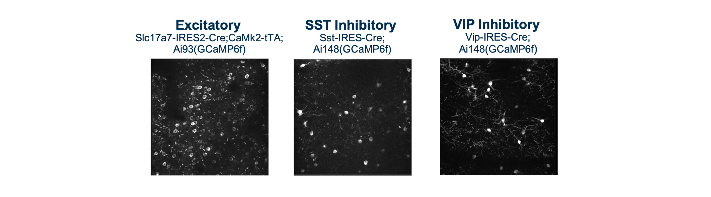
The full dataset includes neural and behavioral measurements from 107 mice during 703 in vivo 2-photon imaging sessions from 326 unique fields of view, resulting in longitudinal recordings from 50,476 cortical neurons. The table below describes the numbers of mice, sessions, and unique recorded neurons for each transgenic line and experimental configuration:
{kind=link}
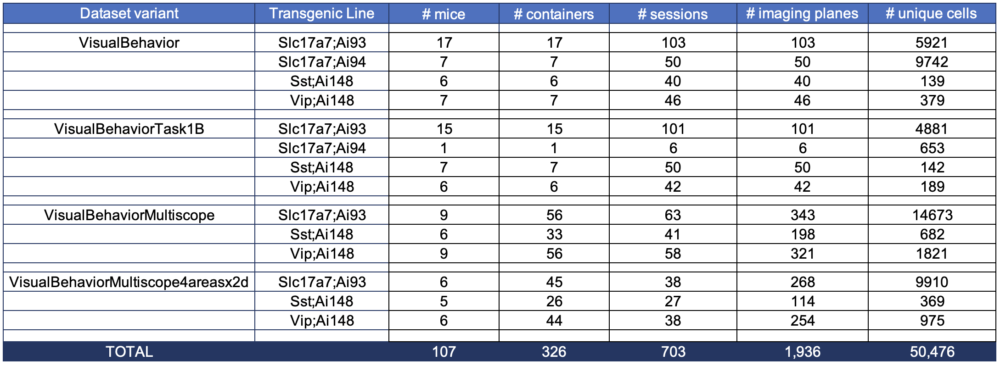
BEHAVIORAL TRAINING¶
Prior to 2-photon imaging, mice were trained to perform a go/no-go visual change detection task in which they learned to lick a spout in response to changes in stimulus identity to earn a water reward. The full behavioral training history of all imaged mice is provided as part of the dataset, allowing investigation into task learning, behavioral strategy, and inter-animal variability. There are a total of 4,787 behavior sessions available for analysis.
{kind=link}
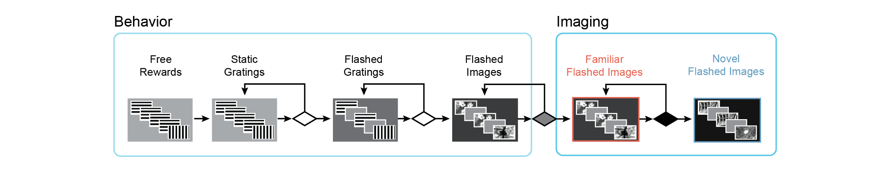
We used a standardized procedure to progress mice through a series of training stages, with transitions between stages determined by specific advancement criteria. First, mice learned to detect changes in the orientation of full field static grating stimuli. Next, a 500ms inter stimulus interval period with mean luminance gray screen was added between the 250ms stimulus presentations, incorporating a short-term memory component to the task. Once mice successfully and consistently performed orientation change detection with flashed gratings, they moved to the image change detection version of the task. During image change detection, 8 natural scene images were presented during each behavioral session, for a total of 64 possible image transitions. When behavioral performance again reached criterion (d-prime >1 for 2 out of 3 consecutive days), mice were transitioned to the 2-photon imaging stage in which they performed the task under a microscope to allow simultaneous measurement of neural activity and behavior.
Behavioral training data for mice progressing through these
stages of task learning is accessible via the BehaviorSession
class of the AllenSDK or the get_behavior_session() method of
the VisualBehaviorOphysProjectCache. Each BehaviorSession
contains the following data streams, event times, and metadata:
Running speed
Lick times
Reward times
Stimulus presentations
Behavioral trial information
Mouse metadata (age, sex, genotype, etc)
2-PHOTON IMAGING DURING BEHAVIOR¶
Once mice are well-trained on the image change detection task, they transition to performing the behavior under a 2-photon microscope. Each 2-photon field of view is imaged across multiple session types, allowing measurement of neural activity across different sensory and behavioral contexts.
{kind=link}
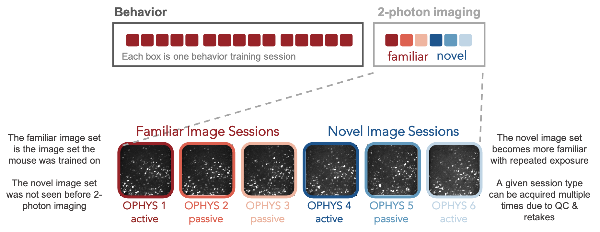
Mice initially perform the task under the microscope with the same set of images they observed during training, which have become highly familiar (each image is viewed thousands of times during training). Mice also undergo several sessions with a novel image set that they had not seen prior to the 2-photon imaging portion of the experiment. Passive viewing sessions are interleaved between active behavior sessions. On passive days, mice are given their daily water before the session (and are thus satiated) and view the stimulus in open loop mode, with the lick spout retracted to indicate that rewards are not available. This allows investigation of the impact of motivation and attention on patterns of neural activity.
During imaging sessions (but not during training), stimulus presentations are randomly omitted with a 5% probability, resulting in an extended gray screen period between two presentations of the same stimulus and disrupting the expected cadence of stimulus presentations. The change and pre-change stimulus presentations are never omitted. Running speed, pupil diameter, licking, and reward delivery are measured and aligned to neural activity traces.
{kind=link}
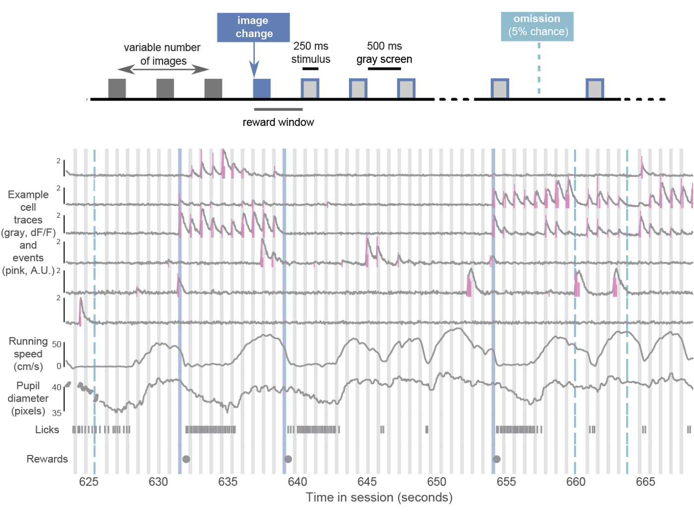
The BehaviorOphysExperiment class in the AllenSDK (or the
get_behavior_ophys_experiment() method of the
VisualBehaviorOphysProjectCache) provides all data for a
single imaging plane, recorded in a single session, and contains
the following data and metadata:
Maximum intensity image
Average intensity image
Segmentation masks and ROI metadata
dF/F traces (baseline corrected, normalized fluorescence traces)
Corrected fluorescence traces (neuropil subtracted and demixed, but not normalized)
Events (detected with an L0 event detection algorithm)
Pupil position, diameter, and area
Running speed (in cm/second)
Lick times
Reward times
Stimulus presentation times
Behavioral trial information
Mouse metadata (age, sex, genotype, etc)
The data collected in a single continuous recording is defined as a session and receives a unique ophys_session_id. Each imaging plane in a given session is referred to as an experiment and receives a unique ophys_experiment_id. For single-plane imaging, there is only one imaging plane (i.e. one experiment) per session. For multi-plane imaging, there can be up to 8 imaging planes (i.e. 8 experiments) per session. Due to our strict QC process, described below, not all multi-plane imaging sessions have exactly 8 experiments, as some imaging planes may not meet our data quality criteria.
{kind=link}
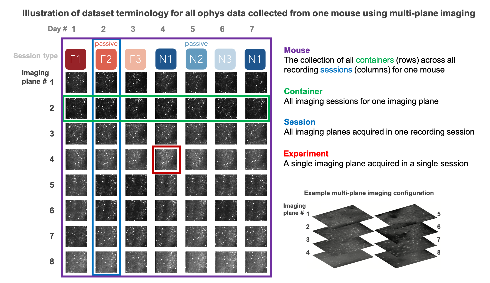
We aimed to track the activity of single neurons across the session types described above by targeting the same population of neurons over multiple recording sessions, with only one session recorded per day for a given mouse. The collection of imaging sessions for a given population of cells, belonging to a single imaging plane measured across days, is called a container and receives a unique ophys_container_id. A container can include between 3 and 11 separate sessions for that imaging plane. Mice imaged with the multi-plane 2-photon microscope can have multiple containers, one for each imaging plane recorded across multiple sessions. The session types available for a given container can vary, due to our selection criteria to ensure data quality (described below).
Thus, each mouse can have one or more containers, each representing a unique imaging plane (experiment) that has been targeted on multiple recording days (sessions), under different behavioral and sensory conditions (session types).
SESSION STRUCTURE¶
During behavioral training, sessions consist of 60 minutes of change detection behavior (other than the TRAINING_0 sessions, which are 15 minutes of associative reward pairing).
During ophys sessions (session_type starting with OPHYS), there is a 5 minute period where no stimulus is shown before the change detection task begins, as well as 5 minutes of gray screen after the task ends. This allows evaluation of spontaneous activity in the absence of stimulus or task. After the second 5 minute gray screen period, a 30 second natural movie clip is shown 10 times. This movie clip is the same as the Visual Coding 2P stimulus called natural_movie_one. This allows evaluation of stimulus driven activity that is independent of the task.
Ophys session structure:
{kind=link}
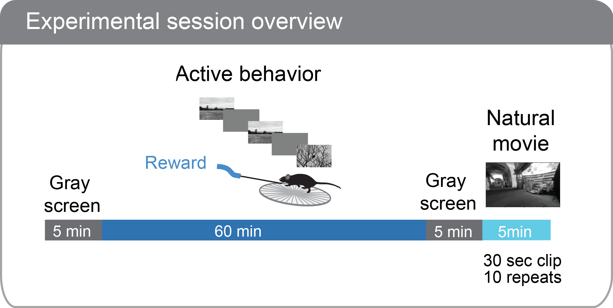
DATA PROCESSING¶
Each 2-photon movie is processed through a series of steps to obtain single cell traces of baseline-corrected fluorescence (dF/F) and detected events, and packaged into the NWB file format along with stimulus and behavioral information, as well as other metadata.
Detailed descriptions of data processing steps can be found in the technical white paper, as well as our data processing repository.
{kind=link}
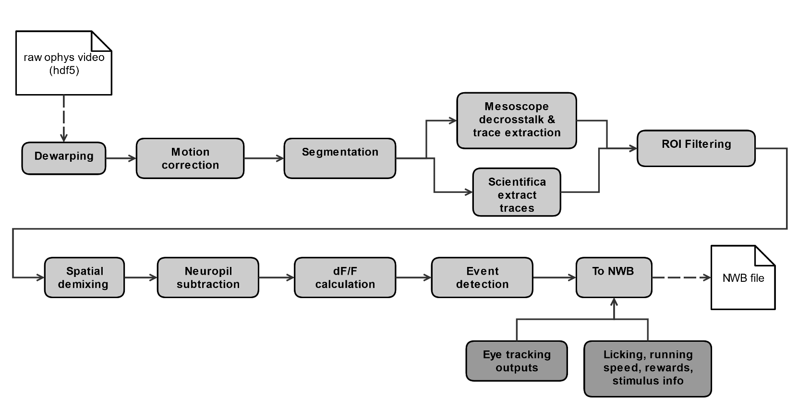
QUALITY CONTROL¶
Every 2-photon imaging session was carefully evaluated for a variety of quality control criteria to ensure that the final dataset is of the highest quality possible. Sessions or imaging planes that do not meet our criteria are excluded from the released dataset. These are a few of the key aspects of the data that are evaluated:
intensity drift
image saturation or bleaching
z-drift over the course of a session
accuracy of session-to-session field of view matching
excessive or uncorrectable motion in the image
uncorrectable crosstalk between simultaneously recorded multiscope planes
errors affecting temporal alignment of data streams
hardware or software failures
brain health
animal stress
SUMMARY OF AVAILABLE DATA¶
Behavior |
Physiology |
Metadata |
|---|---|---|
Running speed |
Max intensity projection image |
Mouse genotype, age, sex |
Licks |
Average projection image |
Date of acquisition |
Rewards |
Segmentation mask image |
Imaging parameters |
Pupil area |
Cell specimen table |
Task parameters |
Pupil position |
Cell ROI masks |
Session type |
Stimulus presentations table |
Corrected fluorescence traces |
Stimulus images |
Trials table |
dF/F activity traces |
Performance metrics |
Stimulus timestamps |
Detected events |
|
Ophys timestamps |
DATA FILE CHANGELOG¶
v1.1.0
Removed data
- Removed behavior session with incorrect image presentations: 931566300.
- This results in the removal several other subordinate data:
ophys session removed: 931566300
ophys experiments removed: 932372699, 932372701, 932372705, 932372707, 932372711
Removed ophys session 875259383 from the ophys metadata table. The behavior component of this session is available as behavior session id=875471358. No ophys data for this session was previously released.
Removed truncated behavior sessions with ids: 934610593, 958310218, 975358131, 1011688792
The above identifiers have also been removed from their respective metadata tables. Columns such as prior_exposures however, are correctly calculated with knowledge of these sessions.
The cell ROIs associated with the above experiments have also been removed from the cell ROI metadata table.
- Current data counts
107 mice (same as v1.0.0)
4079 behavior training session (down from 4082)
703 in vivo 2-photon imaging sessions (down from 704 sessions, previous releases erroneously included session 875259383 in their metadata tables and claimed 705 sessions.)
50,476 logitudinal recordings (down from 50,489)
Metadata Changes
- Additions to multiple tables
Added project_code and behavior_type (active/passive) value to all tables.
Added imaging_plane_group_count, num_depths_per_area, num_targeted_structures, experience_level to Behavior and Ophys session tables.
- Behavior session table
Added trials summary columns: catch_trial_count, correct_reject_trial_count, engaged_trial_count, false_alarm_trial_count, miss_trial_count, trial_count.
Added image_set column.
- Ophys experiment table
Added targeted_imaging_depth to experiment table, representing the average depth of all experiments in the published container.
Better consistency of integer typing throughout.
NWB Data Changes
The value for Age in the metadata, Session/Experiment objects now consistent. NWBs now reflect the age of the animal at the time the session/experiment was taken.
Enforced better and more consistent typing between the metadata tables and the session metadata.
All date/times in NWBs and metadata tables are now explicitly UTC timezone.
Stimulus presentations tables now contain information for additional stimulus conditions, including 10 repeats of a 30 second movie clip at the end of session_types starting with OPHYS, and 5 minute gray screen period before and after change detection behavior in session_types starting with OPHYS. These new stimuli are delineated by stimulus_block and stimulus_block_name. The previously released image behavior stimulus is accessible as the block with a name containing “change_detection”. Use the following example code snippet to retrieve the original stimulus block from the pandas table:
stimulus_presentations[stimulus_presentations.stimulus_block_name.str.contains(‘change_detection’)]
See “SESSION STRUCTURE” section above for more details.
- New columns in the stimulus_presentations table:
is_image_novel, is_sham_change, movie_frame_index, movie_repeat, stimulus_block, stimulus_block_name, stimulus_name, active
See in code documentation for stimulus_presentations table for definitions of these new columns.
- New trials columns:
change_time, change_frame, response_latency
See in code documentation for trials table for definitions of these new columns.
- Include additional traces in the ophys experiment object:
corrected_fluorescence_traces, demixed traces, neuropil traces, df/f traces
corrected_fluorescence_traces are now the correct trace.
Supplemental cache data
New accessors in VisualBehaviorOphysProjectCache to download and cache the natural movie presented to the mice. Additional accessor to convert the movie to the format as shown on the screen during the session. (Warning this conversion is compute intensive). Methods are:
get_raw_natural_movie: Downloads the raw movie if needed and returns as an ndarray.
get_natural_movie_template: Converts the raw movie to the format as shown on the screen during the session. Return a pandas dataframe in a similar formate to the image templates. Warning this conversion is compute intensive.
v1.0.1
Metadata corrections - ophys_container_id columns contained extra IDs of incorrect containers.
v1.0.0
New Data
107 mice, up from 82
4082 behavior training sessions, up from 3021.
705 in vivo 2-photon imaging sessions, up from 551.
50,489 logitudinal recordings from cortical cells, up from 34,619
Metadata changes
A new metadata table is present: ophys_cells_table. This table has a project-wide aggregate of cell_specimen_id, cell_roi_id, and ophys_experiment_id.
Added ‘experience_level’, ‘passive’ and ‘image_set’ columns to ophys_experiments_table
Data Corrections
196 BehaviorOphysExperiments had excess invalid ROIs in the dataframe returned by the events field. These have been corrected to remove these invalid ROIs.
v0.3.0
13 sessions were labeled with the wrong session_type in v0.2.0. We have corrected that error. The offending sessions were
behavior_session_id |
ophys_session_id |
session_type_v0.2.0 |
session_type_v0.3.0 |
|---|---|---|---|
875020233 |
OPHYS_3_images_A |
OPHYS_2_images_A_passive |
|
902810506 |
TRAINING_4_images_B_training |
TRAINING_3_images_B_10uL_reward |
|
914219174 |
OPHYS_0_images_B_habituation |
TRAINING_5_images_B_handoff_ready |
|
863571063 |
TRAINING_5_images_A_handoff_ready |
TRAINING_1_gratings |
|
974330793 |
OPHYS_0_images_B_habituation |
TRAINING_5_images_B_handoff_ready |
|
863571072 |
OPHYS_5_images_B_passive |
TRAINING_4_images_A_training |
|
1010972317 |
OPHYS_4_images_A |
OPHYS_3_images_B |
|
1011659817 |
OPHYS_5_images_A_passive |
OPHYS_4_images_A |
|
1003302686 |
1003277121 |
OPHYS_6_images_A |
OPHYS_5_images_A_passive |
863571054 |
OPHYS_7_receptive_field_mapping |
TRAINING_5_images_A_epilogue |
|
974282914 |
974167263 |
OPHYS_6_images_B |
OPHYS_5_images_B_passive |
885418521 |
OPHYS_1_images_A |
TRAINING_5_images_A_handoff_lapsed |
|
915739774 |
OPHYS_1_images_A |
OPHYS_0_images_A_habituation |